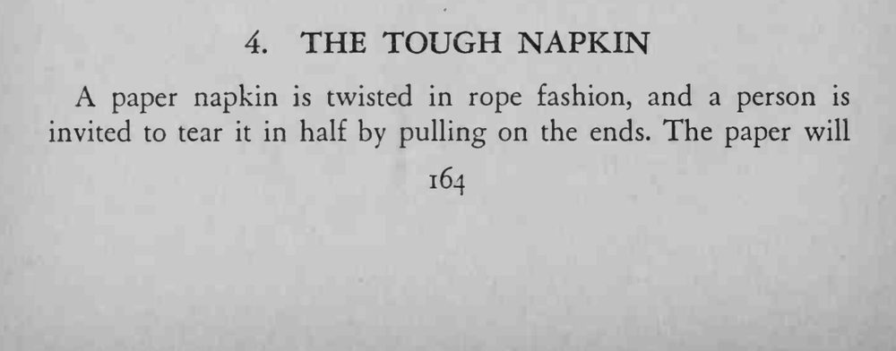
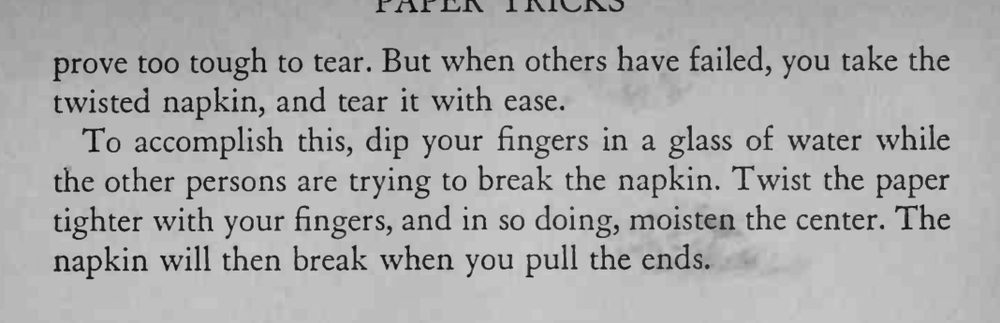

被拧成绳的纸餐巾，别人怎么拉都拉不断；魔术师接过来一拉就断。
只弄湿中间一小段，蘸水要借「再拧紧一点」的动作完成。


A paper napkin is twisted in rope fashion, and a person is invited to tear it in half by pulling on the ends. The paper will prove too tough to tear. But when others have failed, you take the twisted napkin, and tear it with ease. To accomplish this, dip your fingers in a glass of water while the other persons are trying to break the napkin. Twist the paper tighter with your fingers, and in so doing, moisten the center. The napkin will then break when you pull the ends.